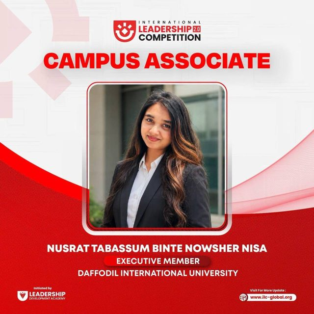

Professional profile
About
Computer Science & Engineering student majoring in Artificial Intelligence at Daffodil International University, Dhaka.
I am in my 9th semester of a B.Sc. in Computer Science & Engineering at Daffodil International University, majoring in Artificial Intelligence. My research applies machine learning to automated threat detection and cyber-attack classification, and deep learning to medical images, most recently comparing CNN, hybrid and Transformer models for nuclei segmentation in histopathology.
I also enjoy building complete systems: a Bangla voice-first health screening platform for community health workers, a lab-safety robot that calls for help on its own, and a landslide early-warning prototype that cross-checks ground-sensor readings against stored NISAR radar features before raising an alarm.
Education
Daffodil International University
B.Sc. in Computer Science & Engineering
- Major
- Artificial Intelligence
- Status
- 9th semester (final year)
- Period
- 2023 – 2027 (expected)
- CGPA
- 3.35 / 4.00 (through 8th semester)
HSC (2022) — Savar Cantonment Public School and College — GPA 5.00/5.00
SSC (2020) — Savar Cantonment Public School and College — GPA 5.00/5.00
Data Science Intern (Virtual)
CodeAlpha · Remote
Selected for CodeAlpha’s one-month virtual Data Science internship, completing hands-on data-science tasks end to end: data cleaning, exploratory analysis, feature engineering, model comparison and held-out evaluation.
AI and machine learning
scikit-learn, CNN and Transformer segmentation, YOLOv8 and pose estimation.
Read the research
Data science and analytics
Python, SQL, pandas, NumPy, Matplotlib and Jupyter.
Explore the ML archive
Software engineering and APIs
FastAPI, REST APIs, SQLite, JavaScript, TypeScript, Expo / React Native, Leaflet, Docker, Git, GitHub and AWS Cloud Foundations.
View deployed applications
Intelligent and embedded systems
C, C++, Raspberry Pi 5, Arduino UNO and GSM SIM800L.
Explore engineering prototypes

- Nov 2026Galactic Problem Solver, NASA Space Apps Challenge 2026NASA with partner space agencies · for Pahar Prohori
- Jun 2026Token of Participation, IEEE ICADHI 2026 Idea CompetitionIEEE International Congress on AI & Digital Health Innovations · DIU
- Apr 20262 × Certificate of Presentation, IEEE QPAIN 2026IEEE Photonics Society Bangladesh Chapter · CUET, Chattogram
- 2026Certificate of Participation, Innovation for Nuclear (I4N)I4N × INNOVENTURE Bangladesh · BYNC with AIUB & BAEC
- Feb 20263-Day Research Workshop: “From Zero to First Idea”Health Informatics Research Lab, Dept. of CSE, DIU
- Aug 2025AWS Academy Graduate, Cloud Foundations20 course hours · Verify on Credly
- DIUSearchMaster: “Unleashing the Google Hackers”Girls’ Computer Programming Club, Dept. of CSE
View all 10 credentials

INTERNATIONAL LEADERSHIP COMPETITION 2.0
Campus Associate · Executive Member
Represented Daffodil International University as a Campus Associate for the International Leadership Competition 2.0, initiated by the Leadership Development Academy.
ilc-global.org
ONGOING
Research & Journal Wing
Executive Member, Computer Programming Club (CPC), DIU. Participant in the “Curiosity to Publication” programme.
CLUBS
Programming clubs
Executive Member, Computer Programming Club, DIU. Executive Member, Girls’ Computer Programming Club, DIU (until 2024).
Let’s work together
Open to research collaborations, internships and graduate opportunities in AI.